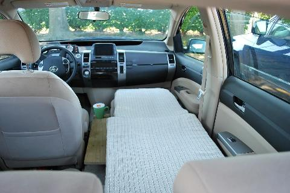
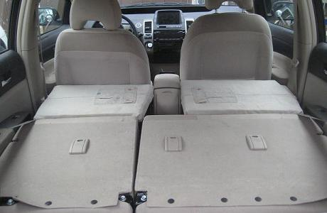
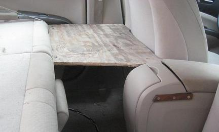
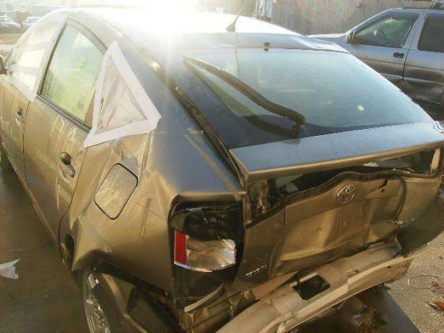
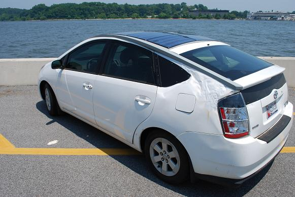
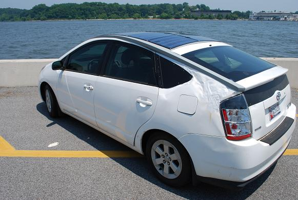

The Truck-E Project
The Truck-E Project
The Truck-E Project
The Truck-E Project
Stealth Charging: Some people without driveways must charge on the street from an extension cord. Look for the extension cord in the yellow circle. Zoom in to these links to see it: 1, 2, 3, 4, and 5. The clincher is the camo paint job on the PVC pipe cap that protects it from the weather. It probably took only about 20 minutes to install (after a very rainy day when the soil was saturated and I could split the soil about 5 inches deep with a hand trowel and just push in the cord. The cord is just a 50 foot outdoor rated green 12 gauge extension cord and only the end is inside about a 6" piece of PVC pipe with the pipe cap on top to keep the receptical dry. Some short screws through the sides of the PVC pipe hold the rubber moulded receptical end in place.
Truck-e, My latest Electric Vehicle (EV) project...
Other related Pages:
The Truck-E Project: I wanted a pure EV that I could tinker with. My Solar PHEV was fun, but was not a pure EV and I wanted to do a conversion where I had more control over the drivetrain. I wanted an MGB to convert and found the ideal car, so I needed an electric conversion kit. Then I found this Converted Honda Civic and realized I could buy the whole thing for less than a new conversion kit for the MGB, plus I could drive this package around a while and learn all about it before removing the motor, controller and battery and then putting it into the MGB project. EV conversions are simple, just an adapter plate and bolt on the motor where the engine used to be. See under the hood.
Truck-E Concept Takes Shape: But then I realized, I'd never take apart a working EV and so I begain to think about how to make this Honda as spiffy as an MGB. I came up with the Truck-E concept below. Not only does this give the EV some eye catching appeal, but it also gives me a place to install a standard 40" by 65" home solar panel. The Panel becomes the truck-E bed cover!
.
Solar Conversion: I'll put solar panels on the hood, roof and as a truck-bed cover. The good news is that the truck-bed panel produces 240 watts and only costs $190. The bad news is that the other 240W worth of panels on the hood and roof cost a WHOPPING $2300! That is more than TEN TIMES cost increase just to double the solar charging power. But I decided that no one would see the top of the Truck bed because the panel is flat and since the purpose of this vehicle is to promote EV's and solar, I figured it was worth it.
To t he right is the drawing for the solar plan for the Honda. I included the added two panels on the trunk since I will probably drive it a while before I make the Truck-E conversion. ANonther problem is the recessed nature of the front of the truck-bed panel. In all situations except due south, the sloping real roof pillars will shadow some cells, and we all know that this knocks out the entire array. Maybe I will dig into the back of the panel and bypass those vulnerable cells?
SOLAR-considerations: Of course the total of 480W of solar is not fully available due to
the sun angles in Maryland. It is only half what they get in Arizona or about 1.8 KWh or less is
from the average Maryland Sun. Much higer in the summer and much less in the winter.
Where you live and the season of the year
makes a difference as can be seen in this plot of annual solar flux:
But 500 watts of solar panels, equates to about 2 miles of electric
range for each hour of full direct sun (about 400 W-Hrs) after being stored in the battery
and used.
 ADDITIONAL SOLAR: Of course, messing with 30 sqft of solar panels on
the roof of my car is nothing comapared to the 700 sqft in my yard,
But my yard project was mired in the mud for 4 years because
the Maryland Department of the Environment regulations against solar
panels on piers or within 100' of the water adjacent creek.
See Solar Laws headaches.
ADDITIONAL SOLAR: Of course, messing with 30 sqft of solar panels on
the roof of my car is nothing comapared to the 700 sqft in my yard,
But my yard project was mired in the mud for 4 years because
the Maryland Department of the Environment regulations against solar
panels on piers or within 100' of the water adjacent creek.
See Solar Laws headaches.
Power-to-GO: . Another value of the solar panels on the Truck-E comes from their portability. As an augmentation to charging they may only gain 10 to 20% in range And like many other Plug-in conversions, this investment has an indeterminate cost-effective break-even point, because it solely depends on how much you need electrical power when you are far from the grid. Solar Power portability gives peace-of-mind where there is no gas or plug-in electricity available. Or in my case where the Federal Government refuses to find a way to let me plugin to the 120v outlet conveniently located next to my parking spot.

Emergency Power Trailer: A small 300 watt Solar-Scooper or Solar-Fanny provides additional power in the field. See Prius as an Emergency Power Station.
Other EV and Car Projects: Shown below are my other EV projects. The
Prius Solar PHEV was my first project using my first salvage Prius. It had
been totaled on the driver's door. After a lot of hammering, jacking, and stretching, I was able to
make it driveable and just coverd the door damage with a sign. This drove well for 4 years and
eventually was unbelievably "t-boned" into the same door by another car. From that accident, I got
a new door which makes the car look good as new. The Solar panel on the hood of the Geo Tracker
achieved 15% boost in MPG because I was able to disconnect the fan belt whch removed the
losees from the alternator, water pump and fan. I coiuld drive it and keep the temperature
below the red line (without the water pump) but it is not viable to let other members of the family drive it.
So the ultimate solution would be to add a $39 12vdc water pump, but I have not gotten around
to that yet.
 .
.

The Prius Inn: I believe it was *Hobbit who first used the term Prius Inn to describe the overnight accomodations for one in the right side of the Prius. Shown below is my rendition using a system of two overlapping plywood pads with strong support so that they can be used either in the short-quick arrangement for those under 5'6" with the rear seat intact, or the full size arrangement for those over 5'6" who like to sleep flat but with the rear seat removed as shown on the right. Original details are found on my APRS-SPHEV page. But I prefer the Prius Hotel configuration shown later on this page.
 .
 .
.
PRIUS HOTEL: The better arrangemnt for sleeping is for two and is simpler than the Prius Inn. Rather than the three custom boards to make the front seat level, the Prius Hotel simply slides the seats forward and installs two boards to extend the back seats as shown below. Four small wooden supports are screwed to the plastic trim to support the boards. The rear of the boards rests on the headrests of the folded down rear seats. This arrangement gives 6' 4" headroom. Since I used Kakhi pants for the covering material, I left the pockets in place. These cover about 1" of hard foam. For sleeping, the entire area then is covered with a suitable foam mattress.
 .  .
WOODIE PRIUS #2: . My second salvage Prius is rebuilt with a wooden rear-end. You can find photos of this car all over the web because a lot of people that pass us on the highway drop back, pull out their camera phones and snap a picture. Then they post it "you wont believe what I saw"... Below are the BEFORE and not-yet-completely AFTER photos.
 .

My local gas station called in the State inspector himself who
promptly failed it the first time on 16 points. He was making demands beyond the written law.
I prepared a 3 ring binder showing the LAW and how I had met the law and he
reluctantly relented and let it pass. But it was an amazing lesson
in how bureaucrats get entrenched in "their way of doing things" and
forget what the law really means.
P.S. After these photos were taken I did go and have an autobody shop smooth out the metal
all around for a nice looking job (and $1100 sheesh)...
OFF TO COLLEGE: As a temporary add-on to get #1 son back from college, I folded the tail-gate down and half-lifted the hatch and added side-boards and another back-piece to increase the storage space by about 9 cubic feet. If used for sleeping, this configuration could be called the Prius Challet with over 7' of headroom! This arrangement is NOT weather proof, just a quick way to haul more junk. Again, this photo was before the MAACO smoothing of the metal ripples.

Re-cycled Prius #3: The next one below I snagged in Jan 2010 for my daughter's graduation present. Apparently crushed by a fallen tree. It is a 2005 with 92K miles on it. It sat in the junk yard for months but the junkyard dog would not go below $5500 parts value for it, since it was in 100% running condition and all normal crash-parts were perfect, just the squashed roof... I wish I had taken a photo of the 4x4 through the windows and the chain fall pulling up to wheels-off-the-ground to an adjacent telephone pole. The entire weight of the car was on the 4x4 pulling up on the roof. THen a day's worth of hammering with the biggest sledge hammer began.
 .

.

Bob Bruninga, WB4APR APRS Engineering LLC
{kind=link}
{kind=link}
{kind=link}
{kind=link}
{kind=link}
{kind=link}
{kind=link}